Interní srovnání úprav podle připomínek p. Sládka z 18. 11. Táhni posuvníkem. U každého snímku zvol Beru / Vrátit originál / Upravit, dole zkopíruj výsledek do chatu. Celkem 19 snímků.
Reálné fotky – retuše 2
54
PŘEDPO
hromada hlíny, suchá tráva a stavební materiál na sousedním pozemku nahrazeny posekaným trávníkem; úzký záhon u domu vpravo zasypán tmavou mulčovací kůrou; pás u silnice (páska, holá hlína, plevel) nahrazen travnatým pásem
Výhrada: Trávník u sousedů je nový (vymyšlený obsah místo hromady), působí čistě, ale je to retuš. Pás u silnice pod větvemi stromu: tráva prosvítá mezi větvemi, větve zůstaly z originálu. Zbytek palet a stavebního materiálu u sousedů vpravo nahoře ponechán (mimo polygon).
55
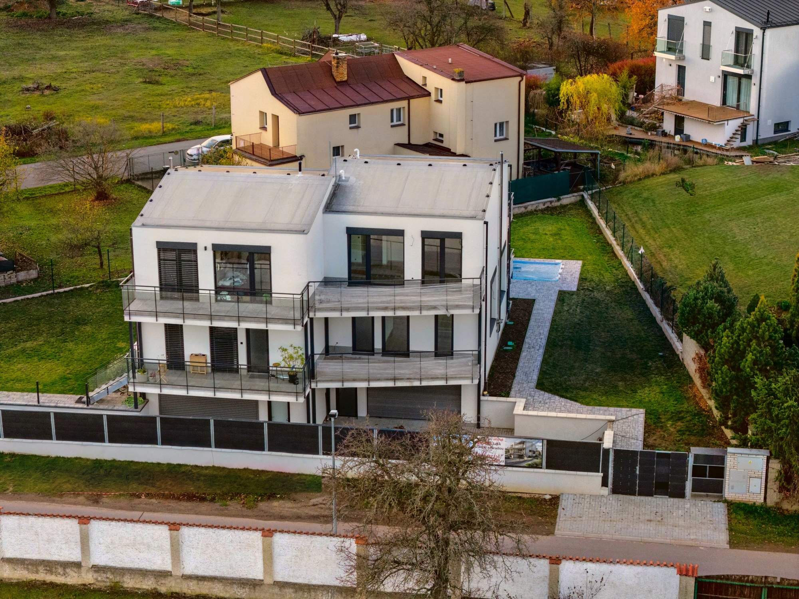
PŘEDPO
hromada hlíny a suchá tráva na sousedním pozemku → trávník; pás u silnice (páska, plevel) → travnatý pás; záhon u domu → kůra
Výhrada: PŘEDBĚŽNÁ verze – v trávníku u sousedů zůstal tmavý ostrůvek plevele (chybná ochrana jehličnanů), přeskládává se.
Exteriérové vizualizace 4
P1194788 Zahrada s bazénem
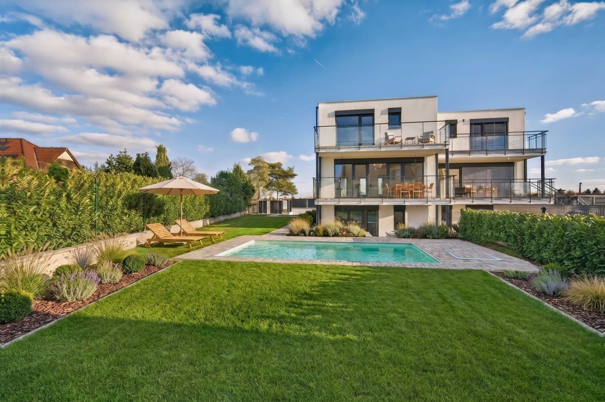
PŘEDPO
Ze schválené verze kola 4, jen oblasti změny (Higgsfield NB Pro 2K Unlimited, 0 kr.; 2 generace za sebou: p1 výsadba, p2 trávník na výsledku p1 – do snímku převzaty všechny zóny z p2, zarovnání 0,64 px). Vlevo u paty opěrné zdi záhon s mulčem (okrasné trávy, levandule, buxusové koule), nízko – zeď nad ním vidět. Vpravo stříhaný živý plot (bobkovišeň) u opěrné zdi s horní hranou u horní hrany plotu, plot nad ním vidět, před ním pás levandule a trav. Trávník hustý, svěží, bez holých míst; světlo a teplota barvy trávníku převzaty z původní verze (slunce/stín). Vše ostatní (dům, bazén, dlažba, lehátka, nebe, stromy) beze změny – vloženo bezeztrátově po blocích JPEG, mimo měněné bloky 0.
Výhrada: Úzký pruh trávníku úplně vzadu za lehátky zůstal původní (lehce žlutější). Šmouha u kolečka lehátka (vada už v kole 4) zůstala – je mimo oblast změny. Záhon vlevo je v popředí širší (perspektiva), rostliny v popředí zakrývají spodek zdi.
P1194788_vecer Zahrada s bazénem – večer
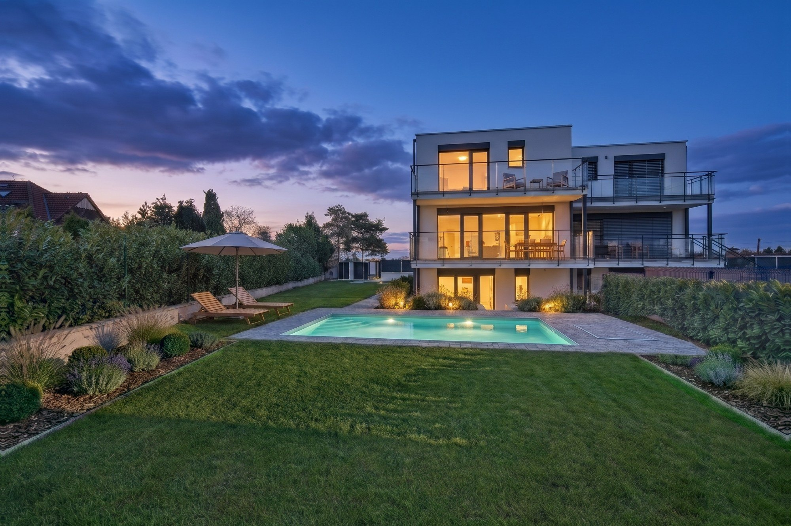
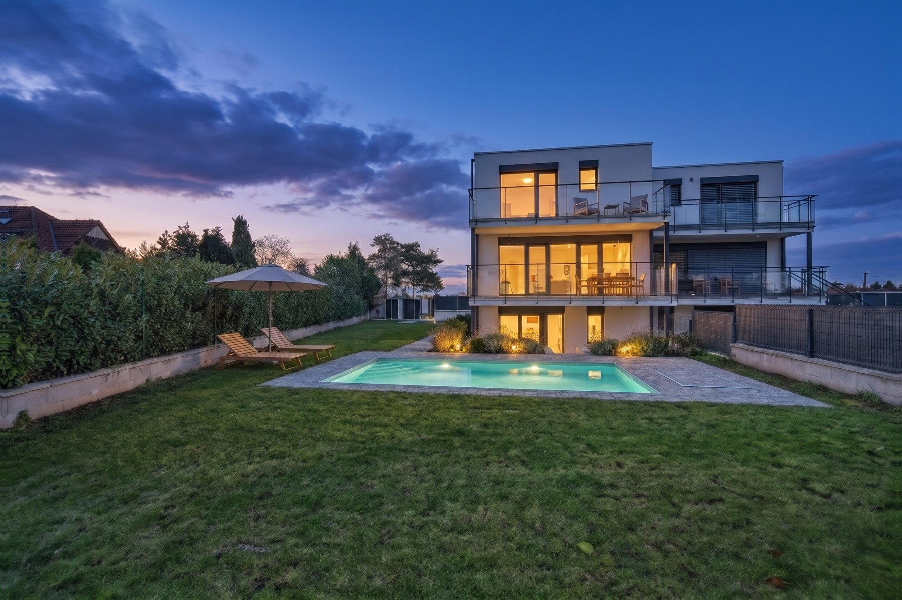
PŘEDPO
Ze schválené večerní verze kola 4, stejné zóny jako denní 0788 (Higgsfield NB Pro 2K Unlimited, 1 generace, vstup = večer kolo 4 + nová denní 0788 jako vzor výsadby; zarovnání 0,79 px). Stejný záhon vlevo, stejný živý plot vpravo s pásem levandule a trav, hustý trávník. Sluneční stín, který generace na trávník přenesla z denního vzoru, vyrovnán; jas a barva trávníku a záhonů převzaty z večerní verze (modrá hodina). Dům, okna, bazén, nebe beze změny – bezeztrátově mimo měněné bloky.
Výhrada: Na trávníku vlevo je při zvětšení slabě znát zbytek přechodu po vyrovnaném stínu (světlejší pás). Trávy v levém záhonu jsou nasvícené o kousek tepleji než okolí (generace).
dron_0724 Dům a Praha v dálce z dronu
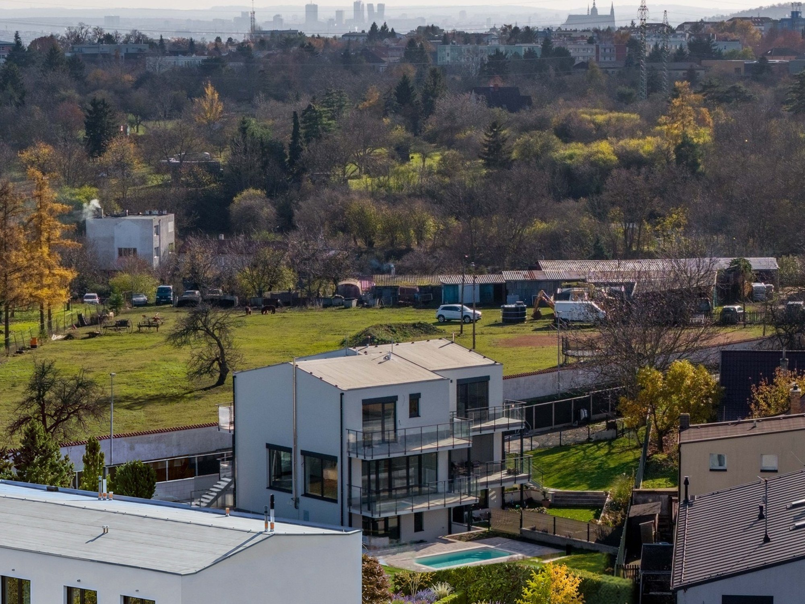
PŘEDPO
BLIŽŠÍ POHLED (výřez A): nový výřez z originálu DJI_0724 v plném rozlišení (8056 px), oblast x 1817–6484, y 950–4450 (4667 × 3500 px) zmenšená na 2560 × 1920 – dům B ~1,8× větší, Praha (Pankrác, Hrad) zůstává nahoře, trojdům jen roh střechy vlevo dole. Z originálu je vše kromě 6 zón z 1 generace NB Pro 2K Unlimited (zarovnání 0,96 px, doostřeno na detail originálu): čisté sklo 4 balkonů domu B (bez fólie), bazén s vodou a světlým lemem bez plachty a stavebního pletiva, dlažba, záhon u domu, zahrádka před bazénem místo zarostlého svahu (trávník + nízký živý plot), pás trávníku s keři podél šikmého pletivového plotu vpravo – plot vede rovně ve své linii až k dolnímu okraji. Hnědá zástěna s podezdívkou za bazénem, horní terasy, sousedé a schodiště vlevo z originálu.
Výhrada: Výklad „šikmý plot“ = pletivový plot domu B vpravo, šikmý k domu (podle situace S1B) – POTŘEBA POTVRDIT u p. Sládka. Poklop technické šachty vpravo od bazénu na tomto výřezu chybí (generace ho nahradila dlažbou). Dole podél živého plotu zůstalo pletivo se sloupky (z generace). Boční schodiště vlevo od domu je zatím původní (čeká na render z nového modelu). Malé skleněné výplně na levé straně domu mají ještě fólii (malé, mimo zóny). Po změně výřezu nejde srovnávat pixel s kolem 4 – před/po ukazuje kolo 4 zvětšené na stejný výřez.
P1194790 Bazén a terasy
PŘEDPO
Ze schválené verze kola 4, jen oblasti změny (Higgsfield NB Pro 2K Unlimited, 1 generace se vzorem nové 0788; zarovnání 0,83 px). Podél levé opěrné zdi stejný záhon jako na 0788 (mulč, okrasné trávy, levandule, buxusové koule), nízko pod hranou zdi. Trávník vlevo v popředí a pás vpravo hustší a zelenější; světlo, stín domu a teplota barvy trávníku převzaty z kola 4. Dům, bazén, dlažba, poklop, lehátka, plot se živým plotem, nebe beze změny (bezeztrátové vložení po blocích JPEG).
Výhrada: Živý plot vpravo z tohoto pohledu vidět není (je za kamerou). Druhý pokus o trávník (p2) zamítnut: přidal svislé pruhy stínů, které ve fotce nejsou. Pás trávníku vpravo je zlepšený jen mírně.
3D model, půdorysy a pohledy 13
pudorys_1PP pudorys_1PP
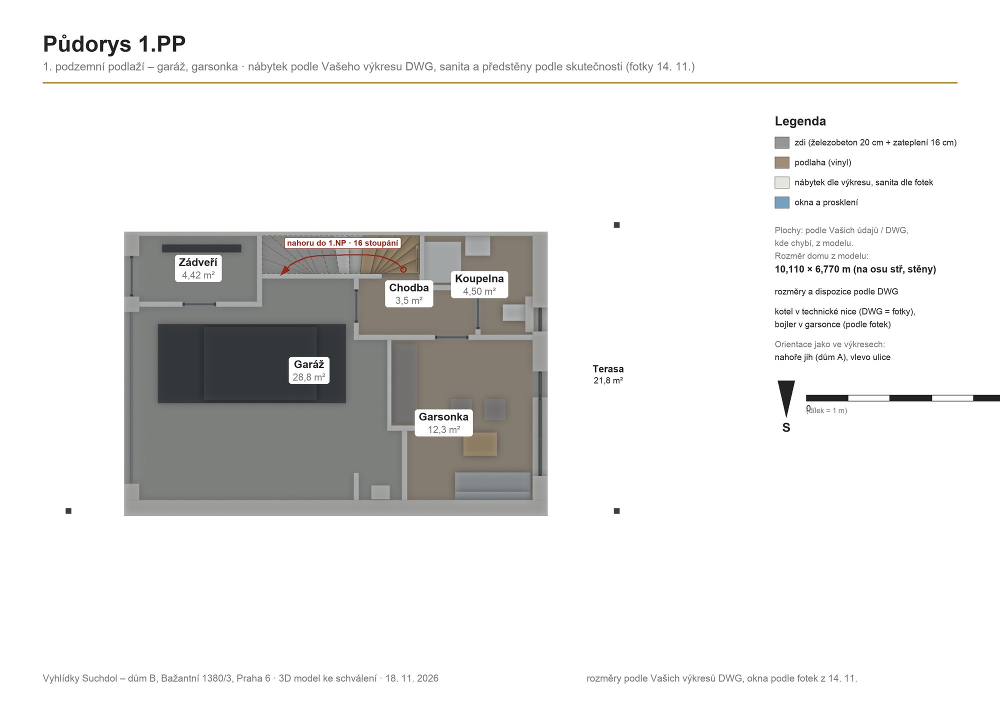
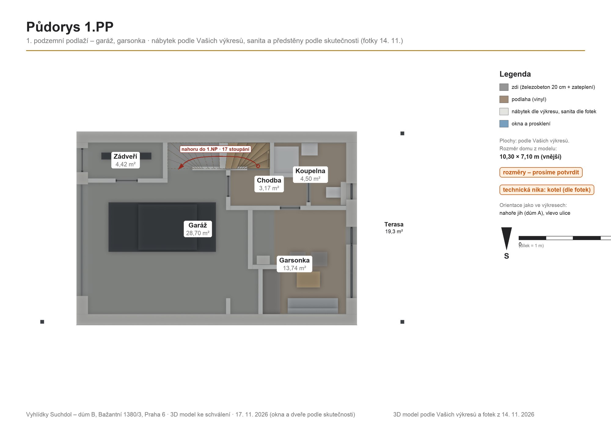
PŘEDPO
rozměry a dispozice podle DWG (10,110 × 6,770 m), stěny a dveře z DWG; technická nika s kotlem v SZ rohu garáže (DWG = fotky); schodiště v pásu u středové stěny; sanita podle fotek
pudorys_1NP pudorys_1NP
PŘEDPO
rozměry podle DWG, obývák 48,3 m² (Sládek 48,5), WC 1,41, zádveří; nábytek podle Vašeho náčrtu „nábytek“ (WhatsApp 18. 11.): rohová sedačka u okna do zahrady s konferenčním stolkem, jídelní stůl pro 6, TV se skříňkou mezi skleněným zábradlím a oknem, kuchyň do L s barovým pultem a 3 barovými židlemi (kuchyň na přání – čárkovaně); šikmá terasa 14,5 m²; schodiště do zahrady na přání otočené podél domu (čárkovaně)
pudorys_2NP pudorys_2NP
PŘEDPO
obvod, koupelna, chodba a jižní pokoj podle DWG; větší pokoj 14,8 a šatní skříně podle screenshotu „nábytek“; nábytek podle screenshotu; v ložnici TV se skříňkou na stěně ke koupelně; balkony 14,5 / 11,4
pohledy pohledy
PŘEDPO
výšky podle řezu DWG (−2,840 / ±0,000 / +2,920 / okap +6,080 / hřeben +7,021); boční schodiště (na přání) z pohledů vypuštěno; prostřední sloupy pryč (východ, sever); okna podle fotek/DWG
axonometrie axonometrie
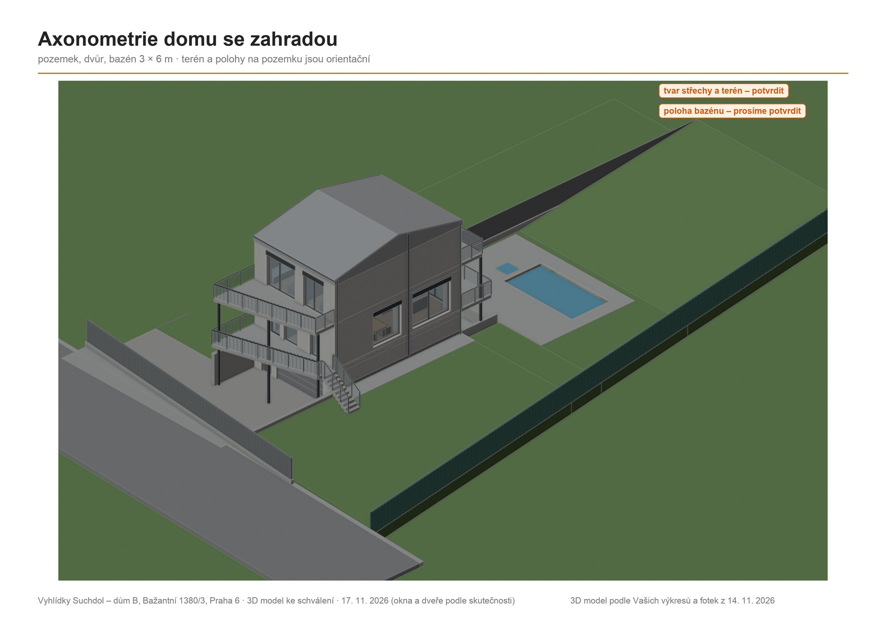
PŘEDPO
zahrada od bazénu rovina (bez svahu); severní plot šikmo podle situace S1B; tvar pozemku a bazén podle situace; prostřední sloup balkonů pryč
rozlozena_podlazi rozlozena_podlazi
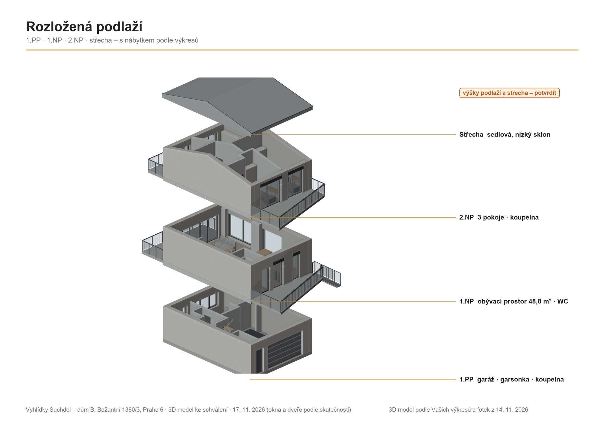
PŘEDPO
podlaží v nových rozměrech a výškách, 2.NP s novou dispozicí a nábytkem, 1.NP s nábytkem podle Vašeho náčrtu (rohová sedačka, stůl pro 6, barové židle)
rez_v_cene rez_v_cene
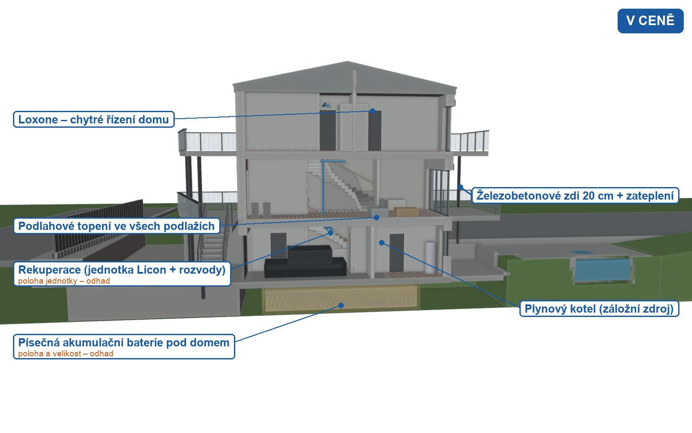
PŘEDPO
texty: plynový kotel = hlavní zdroj (záložní až po TČ); podzemní akumulační nádrž pod podlahou 1.PP (místo „písečná baterie“); rekuperace ve výklenku garáže; Loxone v ceně (světla, vrata, vrátný); zateplení 16 cm šedý EPS
v_cene v_cene
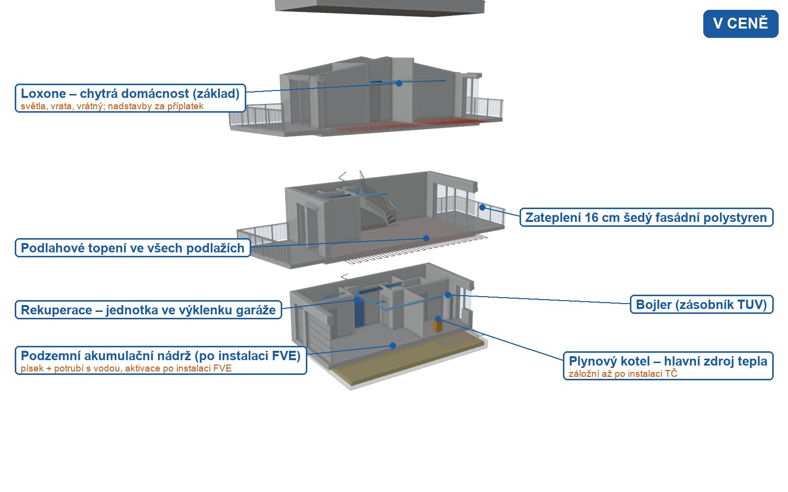
PŘEDPO
stejné texty jako řez; nádrž, kotel, rekuperace a bojler podle DWG/fotek
na_prani_zahrada na_prani_zahrada
PŘEDPO
schodiště podél domu s podestou; nově přihřívání bazénu TČ, solnička, protiproud, přídavná chladicí jednotka, markýzy nad balkony 2.NP, akumulační nádrž k TČ
na_prani_ulice na_prani_ulice
PŘEDPO
stejné doplňky jako zahrada (pohled od ulice); TČ podle DWG u severní fasády
glb_poster glb_poster
PŘEDPO
otáčecí 3D model pro web (GLB ×4 přegenerováno): nové rozměry, výšky, prostřední sloupy pryč, zahrada rovná, plot a bazén podle situace